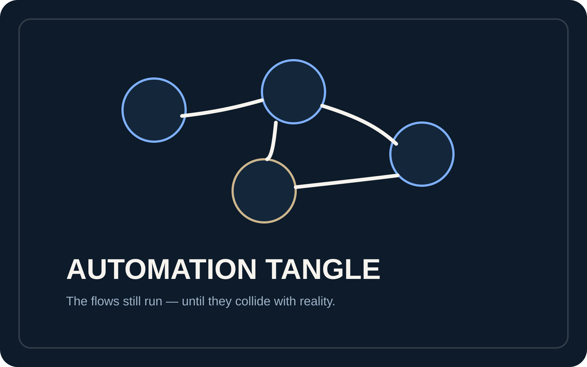
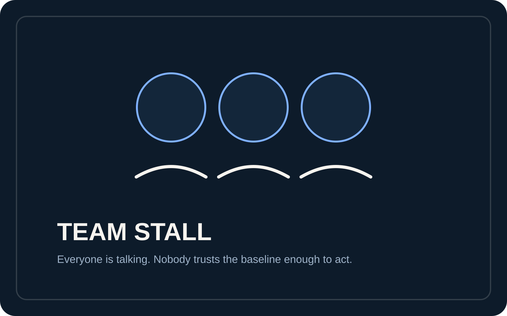

If the next wrong move is expensive, this page matters.
The issue is not simply that the project is messy. The issue is that another sprint, hire, handover, or automation change would now be too risky to run on guesswork.
Situations
Statepath is built for founders and technical leads with one live project, one real confusion point, and a strong reason to turn the current state into something readable before another sprint, hire, integration change, or spend decision makes things worse.
Situation atlas
These used to sit as separate detail leaves. They now live here as one disciplined atlas so the fit judgment can happen on one page instead of across scattered leftovers.
The issue is not simply that the project is messy. The issue is that another sprint, hire, handover, or automation change would now be too risky to run on guesswork.
These patterns help qualified buyers recognise when the right next step is to slow down, audit the agreed surfaces, and make one decision-grade route visible.
If the real ask is ongoing implementation labour, permanent dev-team replacement, or broad product rescue, Statepath should say that honestly instead of pretending the first-step audit is bigger than it is.

An inherited build becomes risky when the people now responsible for it still cannot describe the current state cleanly.
Common signs
Why it gets expensive
Every decision after that point is built on interpretation rather than confirmed state, which turns the next move into guesswork.
How Statepath helps
Read the agreed surfaces, split truth from drift, and return one bounded next route before another sprint or hire is built on inherited assumptions.

The danger is not that AI touched the build. The danger is that the generated work outran human understanding and control.
Common signs
Why it gets expensive
You are not only debugging software. You are debugging the credibility of the build process itself.
How Statepath helps
Separate confirmed capability from surface appearance, identify fragile assumptions, and map where documentation and implementation drift apart before more generation compounds the fog.

The problem is not one bug. The problem is that scripts, integrations, and manual overrides no longer resolve to one trustworthy operating picture.
Common signs
Why it gets expensive
Every additional patch makes the whole system harder to trust, and the organisation begins acting around the automation rather than through it.
How Statepath helps
Identify the authoritative surfaces, trace where flow logic diverges, and separate stable automation from brittle automation before the next workaround becomes another liability.

Decision pressure is where confusion becomes commercially dangerous. It is no longer just a technical inconvenience.
Common signs
Why it gets expensive
This is when more meetings, more coding, or more spend can make the situation materially worse instead of better.
How Statepath helps
Create one decision-grade route before more motion disguises the uncertainty and turns urgency into a confidence-heavy mistake.

Team stall is a legibility problem disguised as a coordination problem. More discussion does not help if nobody trusts the current state.
Common signs
Why it gets expensive
The organisation burns time on coordination friction without reducing uncertainty enough to support a real decision.
How Statepath helps
Produce one current-state read people can challenge, verify, or act on so the conversation can narrow instead of circling.
Signals and fit rules
Decision pressure is the key threshold: if the wrong next move would waste money, time, or trust, the current state needs to become readable first. This section turns the atlas into a clean fit / not-fit route.
There is one project, a defined confusion point, and a real reason to slow down before the next move.
If the real ask is a permanent dev team, open-ended debugging, or broad product rescue, this first-step audit is too small by design.
Why there is no fake stories page
That is why this page uses situations and signals instead of theatre-heavy case-study dressing.
Choose the next page
Use the linked pages to move from fit into scope, proof, trust, and the working route without forcing every answer into one long slab.
Lead fee, follow-through lane, included outputs, and what is intentionally outside the first step.
Open Offer ProcessScope lock, read-only preference, AI-use boundary, and what the first note should contain.
Open Process Sample OutputReview the truth-map, risk-note, and next-route structure that comes back when the route is a fit.
Open Sample Output Trust & AccessMinimum access, read-only preference, AI-use limits, and closeout posture.
Open Trust & Access Start HereStart with the project, the confusion point, and why the wrong next move matters.
Open Start Here